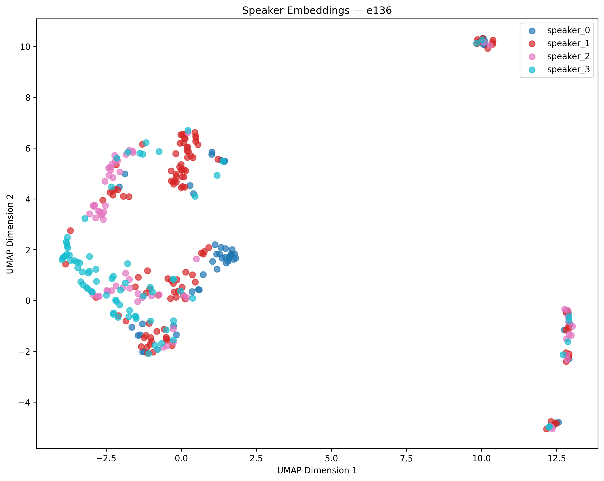
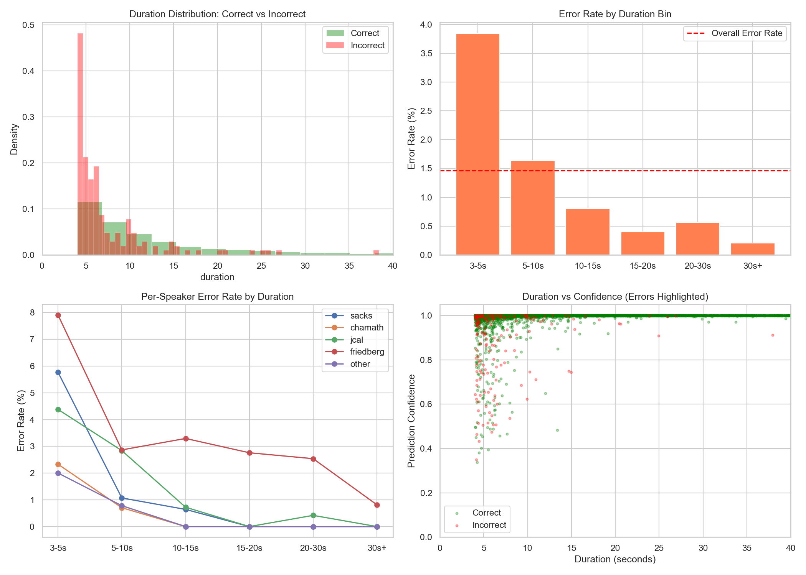

(Cursed) Multi-Speaker Classifiers
Speaker Classification Policy Evolution
TL;DR: Humans must review AI outputs, even when the results and scores look good.
The voice classifiers followed an iterative product-development process, where learnings and insights were fed back into GPT to create better tooling.
- V1 used binary classifiers to bootstrap a "voiceprint" for each All-In Podcast host.
- V2 was a proof of concept that used speaker_ids as a signal in Streamlit.
- V2.5 turned speaker labeling into a scalable human-review workflow using Streamlit.
- V3 was trained on audio longer than five seconds for maximum accuracy. The result: it confidently mislabeled a guest as a host.
V1: Host-Only Classification
V1 was four binary voice classifiers (i.e., JCal vs. everyone else, Sacks vs. everyone else, etc.). The training examples were created by iterating over paired audio and transcript segments and labeling each speaker's identity in Streamlit. The final product was a multi-speaker classifier trained only on the voices of the four hosts.
V2: Clownfish
I started V2 because I hadn't deliberately created a hard-negative class in V1. Gathering guest audio from more than 200 episodes would have been awfully time-consuming, and it did not seem important to the project, or so I thought. That is why I avoided it. V2 used a Streamlit app I named 'Clownfish', because Nvidia NeMo just came online. NeMo replaced Pyannote as the diarization/classification leg of the pipeline, as I found NeMo signfiicantly more reliable at identifying the true number of unique voices in audio. During this time, I thought I could use speaker_ids as a proxy signal for labeled names. So, the flow became: use facial recognition to confirm the speaker, listen to audio files associated with each speaker_id, label the speaker for that episode, backfill the identity, and extract the segments as labeled speaker audio files. The initial V2 corpus was small because it was a proof of concept. V2.5 grew it dramatically. V3 shrank it again.



V2.5 Test
V2.5 applied the Clownfish HITL app to the full All-In episode corpus, using audio files of all lengths. GPT suggested an XGBoost classifier, which was trained on 143,467 labeled audio files from hosts and guests.
Error rates continued to decrease as clip duration increased, and longer-form speech was classified with high accuracy. This was consistent with white papers reporting higher error rates for audio shorter than five seconds. To account for this, I trained one final classifier, V3, on audio longer than five seconds.

V3 Classifier: Episode 136
V3 was informed by white papers, so I trained the classifier on speech audio longer than five seconds. The intent was to use AI classification where it was known to be most accurate, then back-propagate the labels onto shorter segments.
The result: in Episode 136, I discovered guest Brad Gerstner being confidently classified as David Friedberg on long-form speech audio. Longer-form audio, like the example on the left below, was ineligible for back-propagation. Back-propagation was intended only for audio shorter than five seconds.
{
"speaker_id": "SPEAKER_03", // Brad's ID
"is_lizard": false,
"custom_speaker": "friedberg", // actually Brad
"confidence": 0.9999877,
"duration": 10.4119,
"text": "Number one, if we flashback to what went on in China with Toutiao and Douyan...",
"speaker_id_propagated": true
}
{
"speaker_id": "SPEAKER_04", // Friedberg's ID
"is_lizard": true,
"custom_speaker": "friedberg", // actually Brad
"confidence": 0.0,
"duration": 0.3200,
"text": "Where is JCal?", // Brad is talking
"speaker_id_propagated": true
}
Looking deeper, Gerstner's embedding was vocally closer to JCal's voice than JCal was to himself, even though JCal was not in the episode at all. Keep in mind that v2.5 and v3 voice classifier knew Brad Gerstner's voiceprint. Still, it confidently labeled him as Friedberg and, elsewhere in the episode, as JCal.
Takeaway: Manually reviewing transcripts uncovered a problem that the accuracy metrics suggested wouldn't exist. I admit, experimental design is worth a second-pass given how much I've learned in this space since. Even so, failures later exposed downstream ASR artifacts that would have gone undetected if I had happy-pathed the classifier without careful review. the classifier without skeptical review.
Benchmark Results
V1 Benchmark
| Speaker | Total | Train | Validation | Test |
|---|---|---|---|---|
| Chamath | 716 | 716 | 0 | 0 |
| Friedberg | 1,483 | 1,016 | 226 | 241 |
| JCal | 840 | 594 | 123 | 123 |
| Sacks | 820 | 581 | 129 | 110 |
The 89.9% score was not a valid four-speaker benchmark. Chamath appeared only in the training set, so his performance was never measured during validation or testing. Nearly half of the training data also came from three episodes. These were not ideal results, but V1 was, again, a bootstrapping engine.
V2 Benchmark
| Model | Cross-validation | Validation |
|---|---|---|
| Random Forest | 93.0% ± 3.6% | 97.2% |
| SVM | 93.6% ± 3.1% | 97.9% |
| Logistic Regression | 91.8% ± 3.3% | 97.7% |
| MLP | 92.7% ± 3.2% | 97.9% |
| Speaker | Precision | Recall | F1 | Test samples |
|---|---|---|---|---|
| Sacks | 100% | 94% | 97% | 330 |
| JCal | 96% | 96% | 96% | 340 |
| Friedberg | 95% | 94% | 95% | 362 |
| Chamath | 90% | 99% | 94% | 236 |
V2 fixed the missing-class problem. Each speaker contributed 2,280 samples overall and appeared in every split. The MLP tied SVM on validation accuracy and produced the best selected result, with 95.3% accuracy on the held-out test set.
V2.5 Benchmark
| Speaker | Precision | Recall | F1 | Test samples |
|---|---|---|---|---|
| Chamath | 99.50% | 99.59% | 99.55% | 7,386 |
| Friedberg | 99.66% | 99.33% | 99.49% | 4,165 |
| JCal | 99.03% | 99.35% | 99.19% | 7,058 |
| Sacks | 99.55% | 99.00% | 99.28% | 2,912 |
The benchmark looked nearly perfect. Manual review still found Brad Gerstner classified as Friedberg with 99.99877% confidence, then propagated across Episode 136. The test score measured performance on the held-out dataset. It did not prove the system was safe to automate across unfamiliar episodes.